Scheda 2.6 - Il ritmo dello spazio: ripetizione, variazione, intervallo
Lo spazio non si presenta mai come sequenza neutra: è modulato da ritmi, pause, accenti. Ripetizione e variazione strutturano la percezione, danno senso all’estensione, rendono leggibile la forma. Il ritmo costruisce relazioni e orienta il corpo. Le immagini rendono visibile questa sintassi invisibile che precede la composizione.
A.
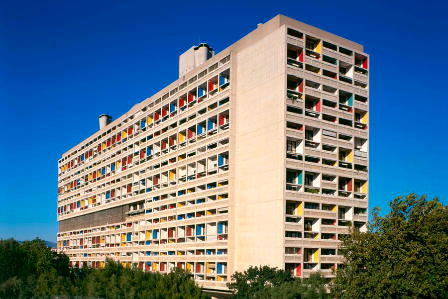
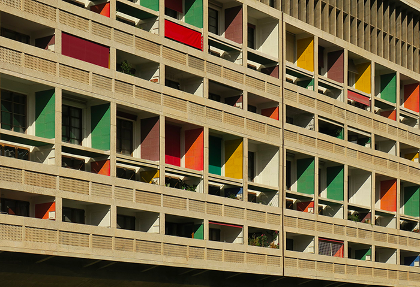
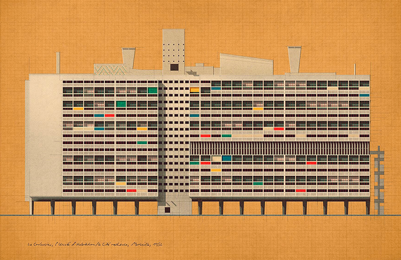
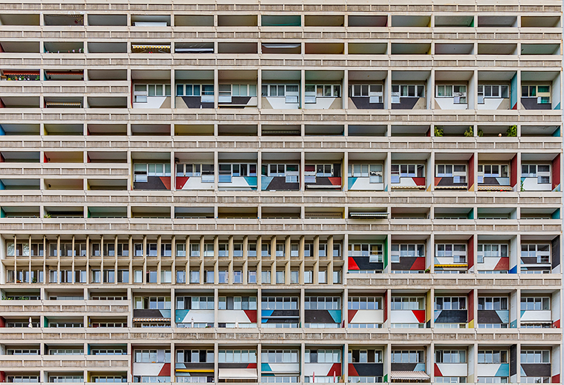
- moduli ricorrenti,
- intervalli variati,
- pieni/vuoti alternati,
- sistema cromatico calibrato.
La facciata dell’Unité d’Habitation di Marsiglia, progettata da Le Corbusier e completata nel 1952, presenta caratteristici balconi protetti da frangisole in cemento, spesso colorati all’interno. Questi elementi emblematici sono parte integrante dell’architettura brutalista e modernista dell’edificio.
Caratteristiche architettoniche
- Frangisole: i balconi sono incorniciati da robuste strutture in cemento, chiamate frangisole. La loro funzione principale è quella di regolare la luce naturale e il calore negli appartamenti bloccando i raggi diretti del sole, adatti al clima mediterraneo di Marsiglia.
- Tavolozza dei colori: Le Corbusier ha utilizzato colori primari vivaci (rosso, giallo, blu) per dipingere le pareti interne delle logge (balconi), in contrasto con il cemento grezzo della facciata, una caratteristica spesso visibile nelle foto a colori.
- Facciata modulare: la ripetizione e la disposizione dei balconi creano un motivo geometrico ritmico che conferisce alla facciata la sua identità visiva, riflettendo il sistema di misura “Modulor” sviluppato da Le Corbusier.
- Funzionalità: ogni balcone fa parte di un’unità abitativa e consente una ventilazione trasversale essenziale negli appartamenti, sottolineando l’attenzione dell’architetto per il benessere dei residenti.
B.
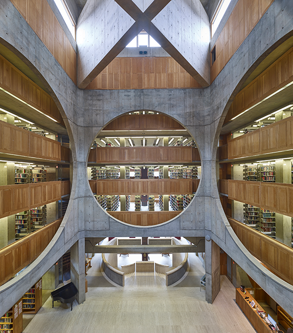
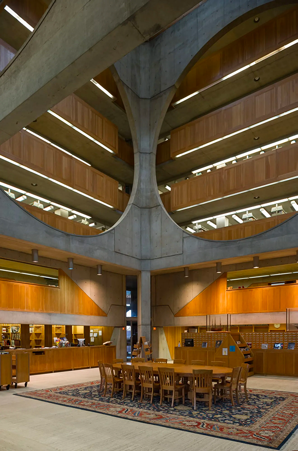

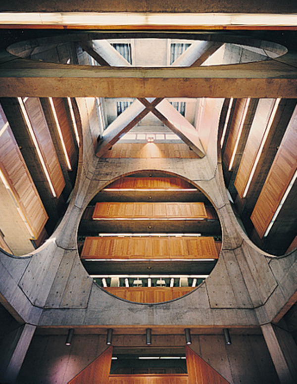
- alternanza dei vuoti centrali e delle nicchie,
- ripetizione dei moduli in legno,
- luce naturale che scandisce le superfici,
- una sequenza che è allo stesso tempo spaziale e luminosa.
La sala centrale della biblioteca della Phillips Exeter Academy progettata da Louis Kahn è uno spazio cerimoniale alto 24 metri che costituisce il cuore dell’edificio. L’interno è un vuoto quadrato simile a una cattedrale, circondato da enormi aperture circolari in cemento che offrono una vista sugli scaffali dei libri ai piani circostanti. Questo progetto è un celebre gioco di materiali, geometria e luce naturale.
Architettura e design
- Disposizione concentrica. La sala centrale è la più interna di tre anelli quadrati concentrici, un concetto che Kahn definiva “scatola nella scatola” o “ciambelle”. L’anello esterno contiene singole cabine di lettura lungo le pareti esterne, mentre l’anello centrale ospita le scaffalature in cemento.
- Giustapposizione di materiali. Il caldo rovere color miele delle ringhiere e del pavimento contrasta con il cemento monumentale e spoglio delle pareti circostanti. Questo crea un senso di calore rispetto agli elementi strutturali più imponenti.
- Diffusione della luce. La luce naturale entra da un grande lucernario circolare nella parte superiore dell’atrio. Due massicce travi trasversali in cemento attraversano il soffitto, diffondendo la luce e distribuendola uniformemente in tutto lo spazio e fino ai piani sottostanti.
- Forma simbolica. Le enormi aperture circolari ricavate nelle pareti di cemento creano un gioco di quadrati e cerchi, un tema ricorrente nell’opera di Kahn. Il design rivela i libri nell’anello interno, invitando i lettori a scoprire la collezione.
- Umile senso di arrivo. I visitatori che entrano nella sala centrale sono destinati a sentirsi umiliati dalle dimensioni dello spazio. I paragoni architettonici con una cattedrale sottolineano il ruolo della biblioteca come “tempio dell’apprendimento”.
- Spazio sociale tranquillo. Sebbene la sala sia uno spazio comune, il suo design favorisce un’atmosfera riflessiva e tranquilla. Gli studenti possono provare un senso di coscienza collettiva senza essere disturbati nel loro studio individuale.
- Orientamento visivo. Il vuoto centrale permette ai visitatori di comprendere a colpo d’occhio la disposizione della biblioteca. Vedendo gli scaffali dei libri dall’ingresso, gli utenti possono intuire intuitivamente l’organizzazione della collezione.
C.
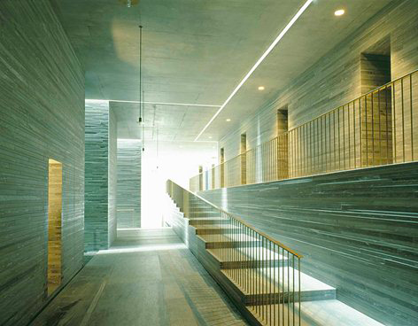
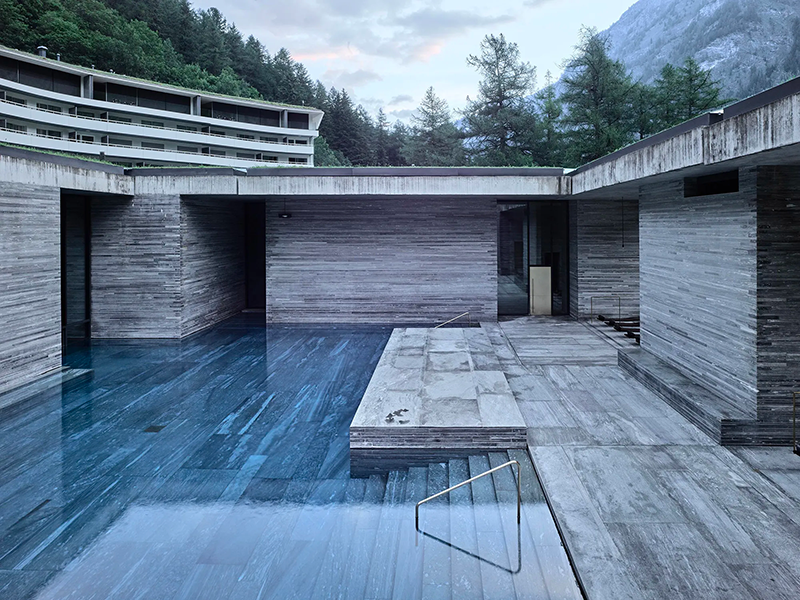
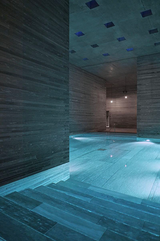
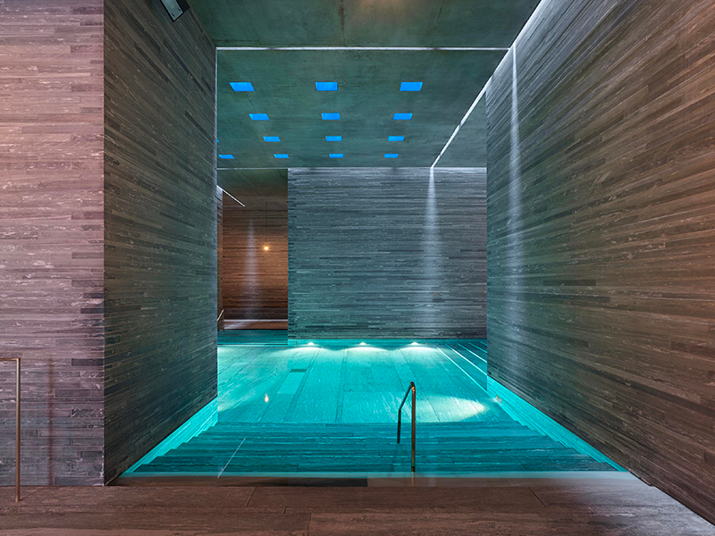
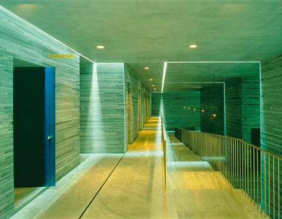
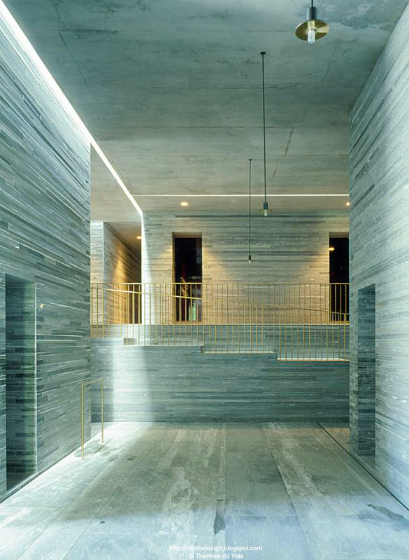
- i blocchi di pietra,
- le altezze variabili,
- le aperture calibrate,
- le pozze di luce, creano un ritmo quasi musicale. È un esempio sublime di come il ritmo possa essere un’esperienza atmosferica, non solo una sequenza geometrica.
I corridoi interni delle Terme di Vals di Peter Zumthor sono caratterizzati da una sequenza di spazi interconnessi simili a grotte, costruiti con 60.000 lastre orizzontali di quarzite gneiss di Vals, estratta localmente. Questo design crea un’esperienza profondamente sensoriale e monolitica, che evoca la sensazione di trovarsi all’interno di una montagna o di un’antica sottostruttura.
Caratteristiche architettoniche dei corridoi
- Materialità e consistenza: Il materiale principale è la quarzite locale, nota come gneiss di Vals. La pietra è tagliata in strisce lunghe un metro e posata orizzontalmente, creando un motivo lineare e deciso. Questa disposizione a strati, con variazioni di colore, conferisce alle pareti una qualità unica, quasi tessile, che contrasta con la superficie liscia dell’acqua e della luce.
- Esperienza spaziale: i corridoi sono stati intenzionalmente progettati come un percorso “labirintico”, che controlla la prospettiva dei bagnanti e li conduce attraverso un percorso di circolazione accuratamente modellato. Il gioco di luci e ombre e i suoni mutevoli dell’acqua intensificano l’esperienza sensoriale. I soffitti alti nelle aree principali aiutano a prevenire qualsiasi sensazione di claustrofobia, nonostante la costruzione solida e senza finestre di molti santuari interni.
- Luce: La luce è un elemento fondamentale, utilizzato per ottenere un effetto drammatico. Le strette fessure nel soffitto e i piani verticali di luce provenienti dalle piscine adiacenti creano linee nette e un’illuminazione suggestiva in spazi sotterranei altrimenti poco illuminati. Questa manipolazione della luce, dell’acqua e della pietra è fondamentale per il design suggestivo di Zumthor.
- Blocchi monolitici: L’edificio è concepito come una serie di blocchi di pietra massicci e compatti e di vuoti. I corridoi sono essenzialmente gli spazi “scavati” tra questi elementi strutturali. Questo metodo di costruzione conferisce agli interni un aspetto solido e senza tempo, come se fossero stati scolpiti direttamente nella roccia anziché costruiti.
- Collegamento con la natura: Il principio di progettazione era quello di costruire “nella montagna” e “con la pietra”, creando un’architettura profondamente integrata con l’ambiente alpino circostante. La natura sotterranea dei bagni, collegati all’hotel solo da un passaggio sotterraneo, enfatizza la separazione dal mondo esterno per un’esperienza rituale.